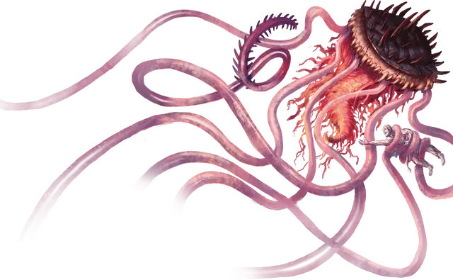

Объятия смерти
Death Embrace
Огромная Аберрация, хаотично-злая

Класс Доспеха 13 (природный доспех)
Хиты 147 (14к12 + 56)
Скорость 0 футов, плавая 20 футов
| мод | спас | ||
|---|---|---|---|
| СИЛ | 23 | +6 | +10 |
| ЛОВ | 15 | +2 | +2 |
| ТЕЛ | 19 | +4 | +4 |
| мод | спас | ||
|---|---|---|---|
| ИНТ | 6 | −2 | −2 |
| МДР | 9 | −1 | +3 |
| ХАР | 4 | −3 | −3 |
Иммунитет к состояниям истощение, окаменение, паралич, сбивание с ног
Чувства слепое зрение 60 футов (слеп за его пределами), пассивное Восприятие 9
Опасность 11 (7200 опыта)
Бонус мастерства +4
Особенности
Подводное дыхание. Объятия смерти может дышать только под водой.
Окаменяющие жгутики. Любое существо, которое начинает свой ход в пространстве объятия смерти, должно совершить спасбросок Телосложения 16. При провале существо становится опутанным. Существо, опутанное таким образом, должно повторять спасбросок в конце каждого своего следующего хода, окаменевая при провале или оканчивая на себе эффект в случае успеха. Состояние окаменения длится до тех пор, пока эффект не будет окончен заклинанием высшее восстановление [greater restoration] или подобной магией.
Скручивание. В начале каждого своего хода объятия смерти может подтянуть к себе каждое схваченное существо, на расстояние до 20 футов (никаких действий не требуется).
Действия
Мультиатака. Объятия смерти совершает две атаки Щупальцем.
Щупальце. . Рукопашная атака оружием: +10 к попаданию, досягаемость 60 футов, одна цель. Попадание: 13 (2к6 + 6) колющего урона плюс 11 (2к10) урона психической энергией. Если цель Большого размера или меньше, она становится схваченной (Сл высвобождения 16). Объятия смерти имеет шесть щупалец, каждое из которых может схватить одну цель.
Реакции
Щит из тел. Когда по объятиям смерти попадают атакой, одно схваченное объятием смерти существо (выбранное объятием смерти), получает урон вместо него.
Описание
Дрейфующие по темным водам Незердипа объятия смерти представляют собой жуткое зрелище. Под его зонтиком находится кружевная, извилистая масса, которая гудит от магии, окруженная шестью 60-футовыми колючими щупальцами. Объятия смерти используют эти щупальца, чтобы схватить и превратить свою жертву в камень.
Несмотря на свое зловещее название, объятия смерти не являются чрезмерно агрессивным существом. Он предпочитает выжидать, используя существ, которых он поймал в свои щупальца, в качестве щитов для отражения атак.